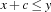
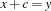
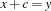
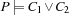
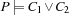
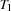
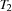

11.1 Building a House
We first consider the problem to build a house (in a simplified way). We will successively refine the problem specification, the model and the distribution strategy in order to solve more and more demanding problems.
Problem Specification
The task names, their description, duration (in days) and the company in charge are given in Figure 11.1. For example, b denotes the task involved with the carpentry for the roof. This task lasts for 3 days. Task a must be finished before the work for task b is started (indicated by the column Predecessor). The company in charge for task b is House Inc. The overall goal is to build the house as quickly as possible.
Task | Description | Duration | Predecessor | Company |
|---|---|---|---|---|
| Erecting Walls | 7 | none | Construction Inc. |
| Carpentry for Roof | 3 |
| House Inc. |
| Roof | 1 |
| House Inc. |
| Installations | 8 |
| Construction Inc. |
| Facade Painting | 2 |
| Construction Inc. |
| Windows | 1 |
| House Inc. |
| Garden | 1 |
| House Inc. |
| Ceilings | 3 |
| Construction Inc. |
| Painting | 2 |
| Builder Corp. |
| Moving in | 1 |
| Builder Corp. |
Figure 11.1: Building a house.
11.1.1 Building a House: Precedence Constraints
For the first model we do not consider the companies in charge for the tasks.
Model
The model introduces for each task a variable which stands for the start time of the task. In the sequel we will identify a task and its corresponding variable. The end time of each task is its start time plus its duration. For the time origin we assume 0. A trivial upper bound for the time to build the house can be obtained by summing up all durations of tasks. Here, we obtain 29.
 means that the earliest start time of
means that the earliest start time of Distribution Strategy
If all propagators have become stable, it is sufficient to determine each variable to the current minimal value in its domain to obtain a solution. This is due to the fact that we only use constraints of the form  where  is an integer. Hence, we do not need a distributor at all. Note that this fact remains true if we also consider constraints of the form  (this will be needed later).
is an integer. Hence, we do not need a distributor at all. Note that this fact remains true if we also consider constraints of the form  (this will be needed later).
Script
The problem specification which is a direct implementation of Figure 11.1 is given in Figure 11.2. The field under the feature tasks contains the specification as a list of records. The label of each record gives the task name, the field at feature dur the duration, the field at feature pre the list of preceding tasks, and the field at feature res the resource name. The features pre and res are optional, if they are missing no preceding tasks and no resource are required. The task with name pe denotes the additional task representing the project end.
House = house(tasks: [a(dur:7 res:constructionInc)
b(dur:3 pre:[a] res:houseInc)
c(dur:1 pre:[b] res:houseInc)
d(dur:8 pre:[a] res:constructionInc)
e(dur:2 pre:[c d] res:constructionInc)
f(dur:1 pre:[c d] res:houseInc)
g(dur:1 pre:[c d] res:houseInc)
h(dur:3 pre:[a] res:constructionInc)
i(dur:2 pre:[f h] res:builderCorp)
j(dur:1 pre:[i] res:builderCorp)
pe(dur:0 pre:[j])])
Figure 11.2: The specification to build a house.
scheduling compiler
Figure 11.3 shows a procedure that returns a script according to our scheduling specification. The used procedures GetDur and GetStart are shown in Figure 11.4. Such a procedure is called a scheduling compiler because it processes the problem specification and returns a script. Hence, the scheduling compiler compiles the problem specification into an executable script.
fun {Compile Spec}<Post precedence constraints>
TaskSpec = Spec.tasks
Dur = {GetDur TaskSpec}
in
proc {$ Start}
Start = {GetStart TaskSpec}
end
end
Figure 11.3: Scheduling compiler.
fun {GetDur TaskSpec}
{List.toRecord dur {Map TaskSpec fun {$ T}
{Label T}#T.dur
end}}
end
fun {GetStart TaskSpec}
MaxTime = {FoldL TaskSpec fun {$ Time T}
Time+T.dur
end 0}
Tasks = {Map TaskSpec Label}
in
{FD.record start Tasks 0#MaxTime}
end
Figure 11.4: Procedures to compute duration and start records.
The durations and start times of tasks are stored in the records Dur and Start, respectively. The record Start is the root variable of the script returned by the function Compile. First, the propagators for the precedence constraints are created, which is shown in Figure 11.5. After the space executing the scheduling script has become stable, the start times are determined. This is shown in Figure 11.6.
- <Post precedence constraints>=
{ForAll TaskSpec
proc {$ T}
{ForAll {CondSelect T pre nil}
proc {$ P}
Start.P + Dur.P =<: Start.{Label T}
end}
end}
Figure 11.5: Posting precedence constraints.
The statement
{ExploreOne {Compile House}}
runs the script. The makespan of the schedule is 19. By construction this solution is the one with the smallest makespan.
11.1.2 Building a House: Capacity Constraints
In this section we take the companies into account which are in charge for the tasks. We assume that each company cannot handle two tasks simultaneously. That is, the execution of two tasks handled by the same company must not overlap in time.
Model
For each company (which we also call a resource because the companies are consumed by a task) we must find a serialization of the handled tasks, i. e. for each task pair  ,
, we must decide whether is finished before starts or vice versa. Assume two tasks with start times
we must decide whether is finished before starts or vice versa. Assume two tasks with start times  and
and  and the durations and
and the durations and  , respectively.
, respectively.
capacity constraints
Then the constraint
states that the corresponding tasks do not overlap in time. Such a constraint is also known as a capacity constraint, because the capacity of the resource must not be exceeded. The capacity constraints can be modeled by reified constraints for each pair of tasks handled by the same resource (company). But this leads to a number of propagators which increases quadratically in the number of tasks on a resource. This is not a feasible approach for problems with many tasks. Thus, we will use a single propagator in the script providing the same propagation as the quadratic number of reified constraints.
Distribution Strategy
Because of the capacity constraints we have to provide a distribution strategy. We use the standard first-fail strategy.
Script
We extend the scheduling compiler in Figure 11.3 to extract the tasks handled by a common resource. The procedure GetTasksOnResource takes a task specification and returns a record that maps resource names to tasks. Its implementation is shown in Figure 11.7.
fun {GetTasksOnResource TaskSpec}
D={Dictionary.new}
in
{ForAll TaskSpec
proc {$ T}
if {HasFeature T res} then R=T.res in
{Dictionary.put D R {Label T}|{Dictionary.condGet D R nil}}
end
end}
{Dictionary.toRecord tor D}
end
Figure 11.7: Extracting tasks on the same resource.
The modified scheduling compiler is shown in Figure 11.8. The returned script uses
{Schedule.serializedDisj TasksOnRes Start Dur}to create for each resource a single propagator for the capacity constraints as described in the model above.
fun {Compile Spec}<Post precedence constraints>
TaskSpec = Spec.tasks
Dur = {GetDur TaskSpec}
TasksOnRes = {GetTasksOnResource TaskSpec}
in
proc {$ Start}
Start = {GetStart TaskSpec}
{Schedule.serializedDisj TasksOnRes Start Dur}
{FD.distribute ff Start}
end
end
Figure 11.8: A scheduling compiler with resource constraints.
Exercise 11.1 (See solution)
Write a procedure which implements the capacity constraints of the problem by reified constraints.
But we are not only interested in the first solution but in the best solution. For our problem we are interested in the solution with the smallest makespan.
For our example we define the order relation
proc {Earlier Old New}
Old.pe >: New.pe
end
stating that the makespan of the new alternative solution must be strictly smaller than the makespan of the already found solution. We assume that the refined scheduling compiler is the procedure CompileHouse2. Thus, the best solution for our problem can be found by the following statement.
{ExploreBest {Compile House} Earlier}
The first solution which is also the optimal one has a makespan of 21.
11.1.3 Building a House: Serializers
So far we have used only distribution strategies where a variable is selected first and then the domain is further restricted by a basic constraint. Scheduling applications lead to distribution strategies where we distribute not only with basic constraints but with propagators.
serializers
In the previous section we have seen that it is necessary to serialize all tasks on a common resource to satisfy all capacity constraints. This leads to the idea to use a distributor to serialize the tasks. Such a distributor is called a serializer. Thus, we refine the scheduling compiler of the previous section by formulating a new distribution strategy.
Note that we have to refine the notion of distribution here. In Section 2.6 we have distributed a finite domain problem  only with constraints
only with constraints  and
and  . But we can refine the concept of distribution by distributing with constraints and whenever  holds.
. But we can refine the concept of distribution by distributing with constraints and whenever  holds.
By this condition we are sure that no solution is lost. For a serializer we distribute with constraints  and
and  where we assume two tasks with start times and and the durations and , respectively. In the presence of capacity constraints the required condition holds by construction, i. e.
where we assume two tasks with start times and and the durations and , respectively. In the presence of capacity constraints the required condition holds by construction, i. e.  .
.
Ordering Tasks by Distribution
We replace the first-fail distribution strategy by a strategy consisting of two phases. In the first phase we serialize all tasks on common resources and in the second phase we determine the start times of the variables. The serialization is achieved by distributing for each pair of tasks  and  either with the constraint that task is finished before starts or that task is finished before task starts.
Script
The script for the third version of our problem refines the one in the previous section by replacing the first fail distributor by a distributor that orders task and assigning minimal start times. The distributor that orders tasks on resources is defined as follows:
- <Order tasks>=
{Record.forAll TasksOnRes
proc {$ Ts}
{ForAllTail Ts
proc {$ T1|Tr}
{ForAll Tr
proc {$ T2}
choice Start.T1 + Dur.T1 =<: Start.T2
[] Start.T2 + Dur.T2 =<: Start.T1
end
end}
end}
end}
fun {Compile Spec}<Post precedence constraints>
TaskSpec = Spec.tasks
Dur = {GetDur TaskSpec}
TasksOnRes = {GetTasksOnResource TaskSpec}
in
proc {$ Start}
Start = {GetStart TaskSpec}
{Schedule.serializedDisj TasksOnRes Start Dur}
end
end
Figure 11.9: A scheduling compiler with task ordering.
The complete scheduling compiler can be found in Figure 11.9. The optimal solution can be found by
{ExploreBest {Compile House} Earlier}
with 28 choice nodes and 3 solution nodes. Thus, for this problem the use of a serializer results in a larger search tree than the first-fail distributor. In the following section we will tackle a harder problem and we will show that the first-fail strategy as well as the naive serializer of this section completely fail to compute the optimal solution of this more difficult problem.